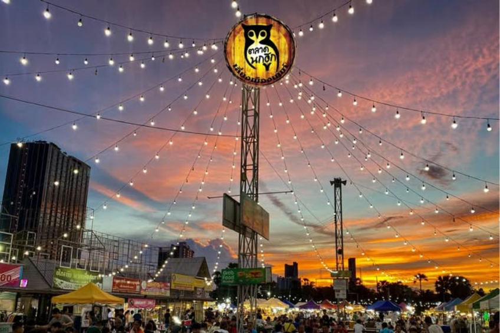
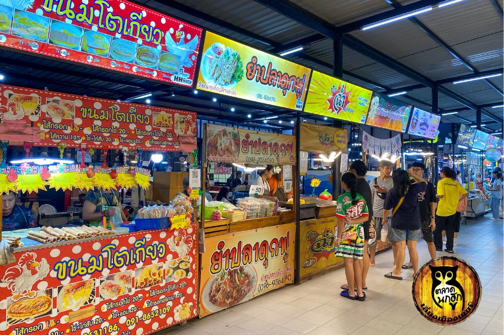
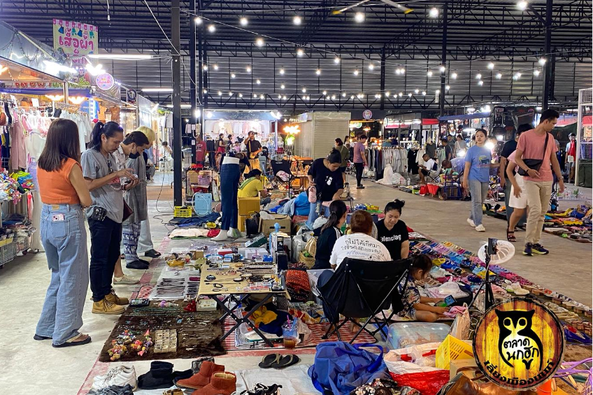
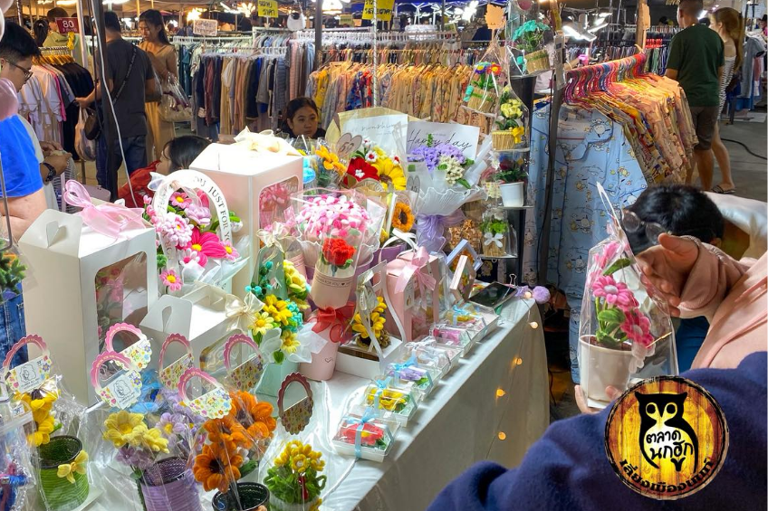

ตลาดนกฮูก

ตลาดนกฮูก ตำบลบางกระสอ จังหวัดนนทบุรี ซึ่งบอกได้เลยว่าเป็นตลาดกลางคืนที่ รวมแหล่งอาหารและสินค้าทุกแนว ไม่ว่าจะเป็น อาหารของกินทุกประเภท เสื้อผ้าหลากสไตล์ ของใช้ของประดับหลากหลายแนวให้เราได้เดินกิน เดินช็อป กันอย่างเต็มอิ่มเต็มที่ และ ไม่ต้องกลัวเลยว่าจะไม่มีที่จอด เพราะเนื้อที่ลานจอดรถภายในตลาด กว้างมากจอดรถได้ถึง 400 กว่าคัน

ภายในตลาดโซนของกิน จะประกอบด้วย ของทอด ข้าวราดแกง ขนมจีนน้ำยา ก๋วยเตี๋ยว และอาหารอีกหลากหลายสไตล์ หลากหลายรสชาติ ที่บอกยังไม่หมด ให้เราได้เลือกรับประทานกัน และราคาเป็นกันเอง

โซนนี้จะเป็นโซนเสื้อผ้า ซึ่งจะขายเกี่ยวกับเสื้อผ้าหลักๆ และตุ๊กตา ชุดที่นอน และอีกมากมาย เพราะมองร้านไหนก็มีแต่เสื้อผ้าสวยๆ ของใช้ กิ๊บช็อป ที่ราคาถูกมากเริ่มต้นตั้งแต่ 10 บาท และทำสำคัญของขายเยอะมากๆ และพื้นที่กว้างมาก
